library(tidyverse)Intro to Mixed Models
Previously: Reproducible Projects in R
Lesson plan
Our goal now is to
- Demonstrate the difference between fixed and mixed-effects models.
- Learn simple mixed-modelling in R using
lmer() - Hypothesis testing of variance components
Load data and Subset
Use the same data chunk you chose in the previous lesson.
alt<-read.csv(here::here("data","19-25CC_ALT_DATA_ALL_2025-08-23.csv"))
al_alt<-alt %>%
filter(site=="AL")Exploratory plots
Let’s make a few plots. To help build our model.
al_alt %>% mutate(year=as.character(year)) %>%
ggplot(.,aes(x=year,y=biomass.1, fill=year)) + geom_boxplot() +
labs(title="Rep variance")
al_alt %>%
mutate(rep=paste0(site.year,"-",rep)) %>%
ggplot(.,aes(x=site.year,y=biomass.1,fill=rep)) + geom_boxplot() +
labs(title="Rep variance")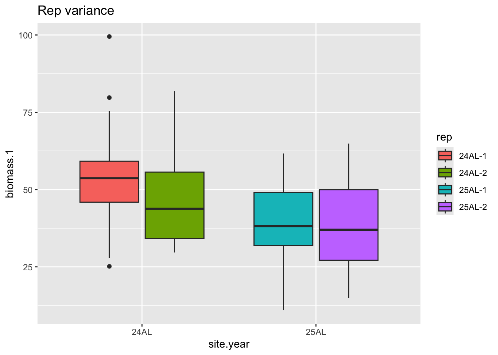
# Create a vector with the names of entries ordered by their descending
## mean biomass
order_entries_by_meanbiomass<-al_alt %>%
group_by(entry) %>%
summarize(meanBiomass=mean(biomass.1)) %>%
arrange(desc(meanBiomass)) %>%
.$entry
al_alt %>%
## Order the factor levels of entry according to biomass-order
mutate(entry=factor(entry,levels=order_entries_by_meanbiomass)) %>%
ggplot(.,aes(x=entry,y=biomass.1,fill=entry)) +
geom_boxplot() +
theme(legend.position = 'none',
axis.text.x = element_text(angle=90)) +
labs(title="Distirbution of performance by Entry")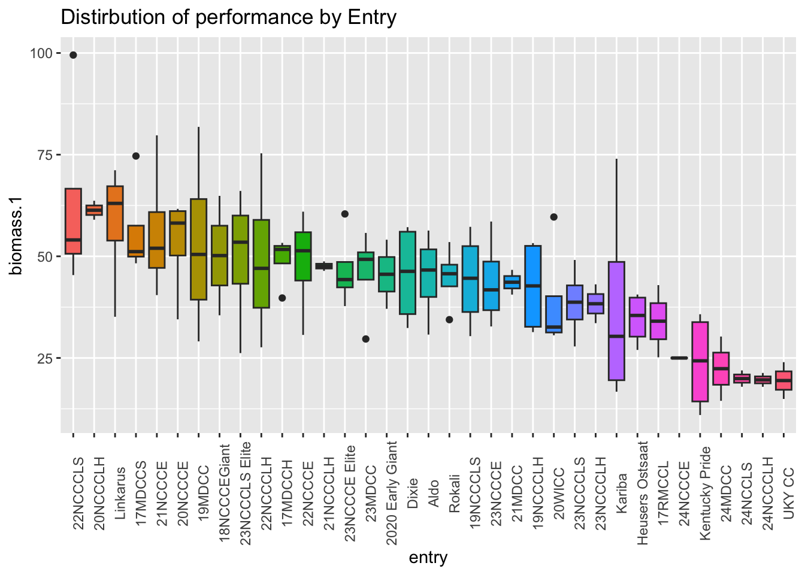
Propose a model
- grand mean, intercept
- effect of year i
- complete block, or rep effect k, nested within year i
- effect of genotype (i.e. entry, aka variety of crimson clover)
- interaction effect, genotype-by-year
- random error, distributed as
Fixed-effects
We need to format the data to model properly
al_alt<-al_alt %>%
mutate(entry=as.factor(entry),
site.year=as.factor(site.year),
# explicitly nest values of rep in site.year
# review explicit vs. implicit nesting
rep=as.factor(paste0(site.year,"-",rep)))# Fitting the model
m0 = lm(biomass.1 ~site.year + rep + entry + entry:site.year,
data=al_alt)
anova(m0) # fit the modelAnalysis of Variance Table
Response: biomass.1
Df Sum Sq Mean Sq F value Pr(>F)
site.year 1 4055.3 4055.3 28.3819 1.833e-06 ***
rep 2 621.0 310.5 2.1731 0.123333
entry 34 11143.9 327.8 2.2939 0.002852 **
site.year:entry 22 5389.6 245.0 1.7146 0.053792 .
Residuals 56 8001.5 142.9
---
Signif. codes: 0 '***' 0.001 '**' 0.01 '*' 0.05 '.' 0.1 ' ' 1# Check model assumptions
plot(m0, which = c(1,2))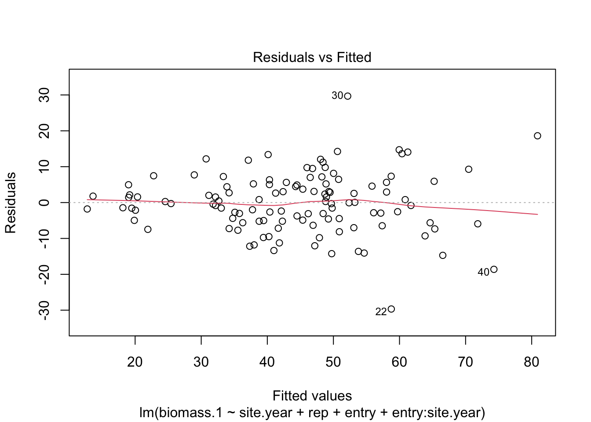
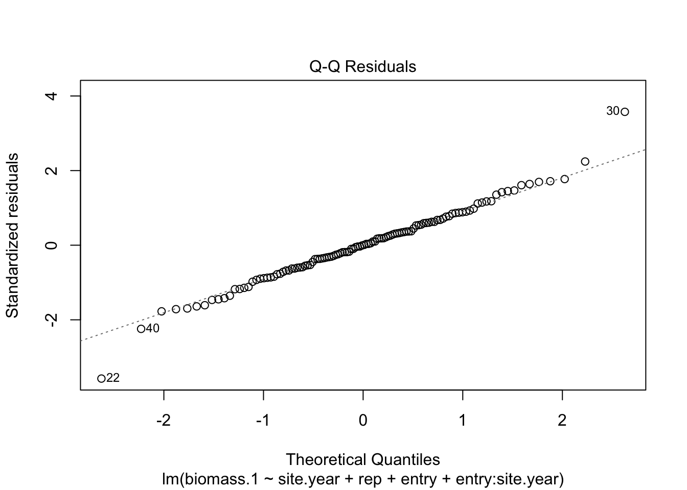
hist(residuals(m0))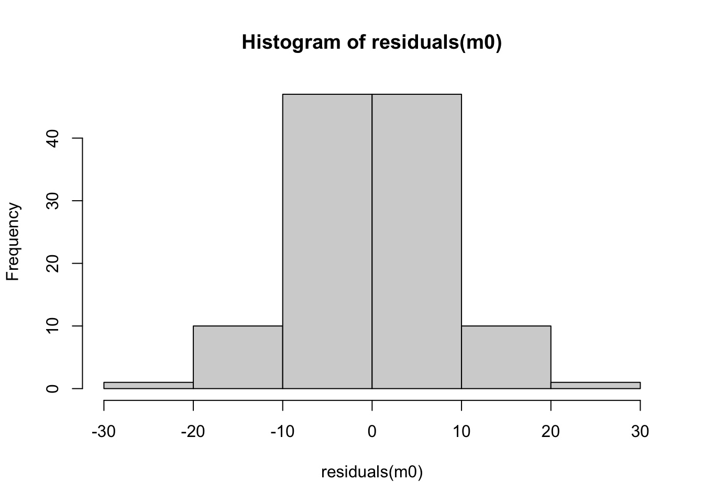
Let’s make a quick comparison of taking raw group-means to using the estimated marginal means (“lsmeans”).
entry_means<-al_alt %>%
group_by(entry) %>%
summarize(mean=mean(biomass.1))
head(entry_means)# A tibble: 6 × 2
entry mean
<fct> <dbl>
1 17MDCCH 49.1
2 17MDCCS 56.3
3 17RMCCL 34.0
4 18NCCCEGiant 50.2
5 19MDCC 53.0
6 19NCCCLH 42.5Try to extract the estimated marginal means (aka the least-square means) from the fixed-model.
library(emmeans)Warning: package 'emmeans' was built under R version 4.5.2Welcome to emmeans.
Caution: You lose important information if you filter this package's results.
See '? untidy'emmean<-emmeans(m0,"entry") %>% summaryNOTE: A nesting structure was detected in the fitted model:
rep %in% site.yearNOTE: Results may be misleading due to involvement in interactionsadj_means<-entry_means %>%
left_join(emmean %>% select(entry,emmean))Joining with `by = join_by(entry)`In the example I chose above, not all levels (entries) of the emmean were estimable.
Why not!?
Below, I make some summaries. Look at the counts of number of observations per entry below.
adj_means %>%
# Count number obs per entry
left_join(al_alt %>% count(entry,name = "Nobs")) %>%
# Count number of years per entry
left_join(al_alt %>% distinct(entry,year) %>% count(entry, name = "Nyears"))Joining with `by = join_by(entry)`
Joining with `by = join_by(entry)`# A tibble: 35 × 5
entry mean emmean Nobs Nyears
<fct> <dbl> <dbl> <int> <int>
1 17MDCCH 49.1 49.1 4 2
2 17MDCCS 56.3 56.3 4 2
3 17RMCCL 34.0 NA 2 1
4 18NCCCEGiant 50.2 NA 2 1
5 19MDCC 53.0 53.0 4 2
6 19NCCCLH 42.5 42.5 4 2
7 19NCCCLS 44.2 44.2 4 2
8 2020 Early Giant 45.6 NA 2 1
9 20NCCCE 53.1 53.1 4 2
10 20NCCCLH 61.3 NA 2 1
# ℹ 25 more rowsThe not-estimated lines were only observed in one year (2 plots instead of 4).
Rather than cherry pick a different data chunk, it highlights already the advantage of a mixed-model.
adj_means %>%
ggplot(.,aes(x=mean,y=emmean)) + geom_point() + geom_abline(slope=1,color='darkred')Warning: Removed 12 rows containing missing values or values outside the scale range
(`geom_point()`).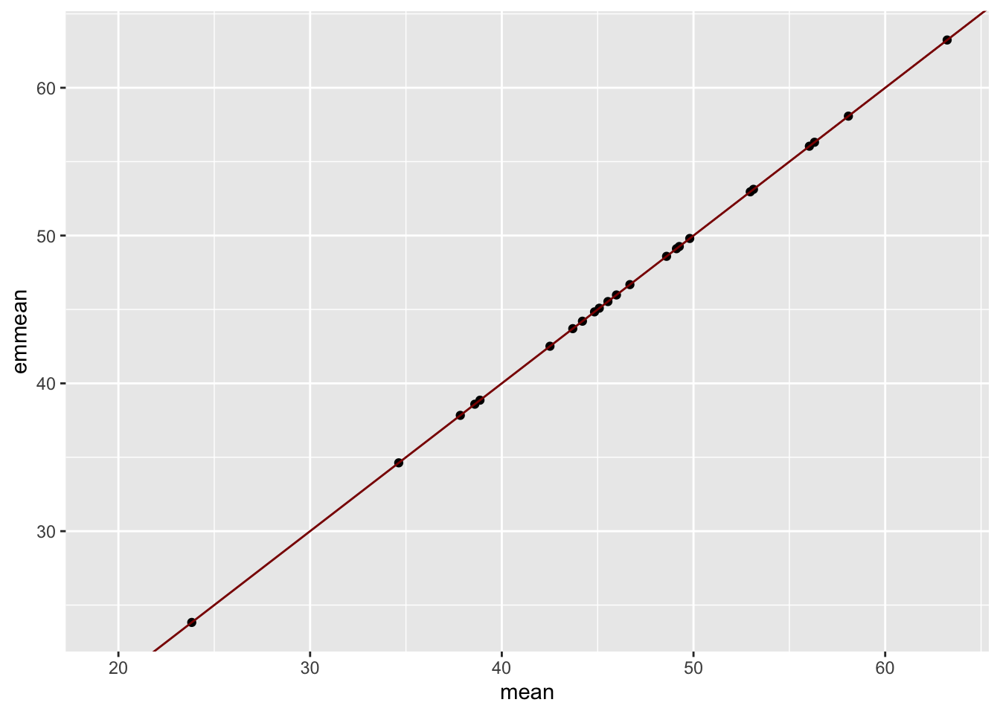
So far, you can see no difference between a raw mean and the est. marg. means (fixed-effects estimate).
That with the caveat that not all fixed-effects levels were estimable b/c of the data structure.
Mixed-models
Now let’s introduce mixed-models, which include both fixed and random effects.
Fixed vs. Random
Recall that:
- Fixed-effects: A fixed effect is a parameter that does not vary.
- Random-effects: An effect whose value depends on “random” events
What is your objective?
Fixed - compare specific levels of factor
Rand - conclusions drawn from larger universe of interest
What units are you sampling?
Fixed - investigator chosen treatment levels
Rand - random sampled levels
Statistical purpose?
Fixed - hypothesis tests on the mean -
Rand - tests on the variance components -
Complex data model?
- Rand - p>>n (more parameters, p than observations, n)
(e.g. genome-wide prediction)
Data contain hierarchically related and non-independent terms
Genotypes are related
Plots within Trials within Years within Sites
Correlated residuals
Uneven replications / unbalanced data
Propose a mixed-model
- grand mean, intercept
- effect of year i
- random-effect for blocks k nested within years i.
- effect of genotype (i.e. entry, aka variety of crimson clover)
- interaction effect, genotype-by-year
- random error, distributed as
NOTE that:
- Random terms have an distribution with an associated mean and variance component
- Interactions even between fixed and random are random
We will call upon the lme4 package to fit our first mixed-models.
lme4’s flagship function lmer() can fit mixed-models where the variance parameters are I.I.D. (independent and identically distributed).
In the next lesson, we’ll learn asreml and/or sommer, which can handle more complex structures of the V matrix.
library(lme4)mm<-lmer(biomass.1 ~site.year + (1|rep) + (1|entry) + (1|entry:site.year),
data = al_alt)
summary(mm)Linear mixed model fit by REML ['lmerMod']
Formula:
biomass.1 ~ site.year + (1 | rep) + (1 | entry) + (1 | entry:site.year)
Data: al_alt
REML criterion at convergence: 939.3
Scaled residuals:
Min 1Q Median 3Q Max
-2.18776 -0.60236 0.00158 0.57017 2.76647
Random effects:
Groups Name Variance Std.Dev.
entry:site.year (Intercept) 58.935 7.677
entry (Intercept) 17.335 4.163
rep (Intercept) 5.807 2.410
Residual 142.962 11.957
Number of obs: 116, groups: entry:site.year, 58; entry, 35; rep, 4
Fixed effects:
Estimate Std. Error t value
(Intercept) 50.027 2.858 17.506
site.year25AL -11.592 3.878 -2.989
Correlation of Fixed Effects:
(Intr)
site.yr25AL -0.694plot(mm)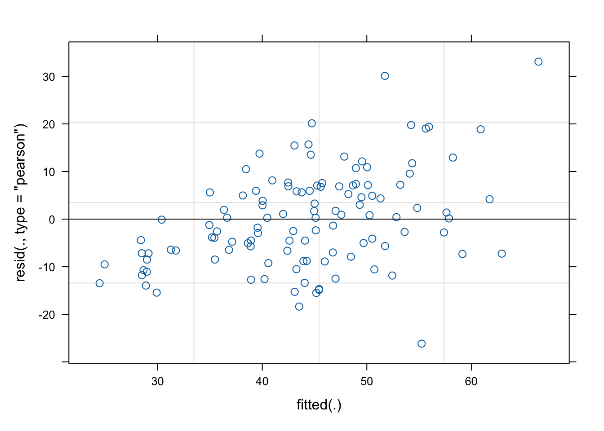
hist(residuals(mm))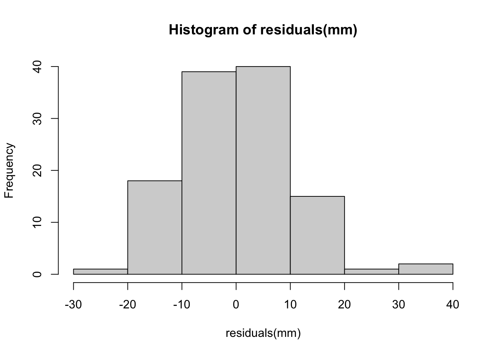
I’d argue this looks a bit heteroskedastic. Might consider log-transform. Might not.
# log_mm<-lmer(logBiomass ~site.year + (1|rep) + (1|entry) + (1|entry:site.year),
# data = al_alt %>% mutate(logBiomass=log(biomass.1)))
# summary(log_mm)
# plot(mm)
# hist(residuals(mm))Hypothesis testing
This may not have come up in lecture.
We may want to test whether our variance estimates are different from zero, beyond a reasonable doubt.
Fixed-effects models use
- F-tests (which are ratios of sums-of-squares) to determine the “significance” of the sources of variation.
- t-tests are also used to compare coefficient estimates to zero.
The best way to do this for a mixed-model is a likelihood ratio test (LRT).
- LRTs compare focal models against so-called “null” models in which one or more variance component have been removed.
- Another way to say this is that LRTs compare nested models.
- ONLY nest-models. You cannot compare different datasets!
- The ratio of likelihoods of the two models is compared to a -distribution.
- NOTE: Models differing in fixed-effects should be compared with maximum likelihood (not REML); i.e.
REML=FALSEinlmer().
If removing a particular variance component improves or does not change the fit of the model, that component is not of interest.
mm_nullentry<-lmer(biomass.1 ~site.year + (1|rep) + (1|entry:site.year),
data = al_alt)
anova(mm,mm_nullentry)refitting model(s) with ML (instead of REML)Data: al_alt
Models:
mm_nullentry: biomass.1 ~ site.year + (1 | rep) + (1 | entry:site.year)
mm: biomass.1 ~ site.year + (1 | rep) + (1 | entry) + (1 | entry:site.year)
npar AIC BIC logLik -2*log(L) Chisq Df Pr(>Chisq)
mm_nullentry 5 957.01 970.78 -473.50 947.01
mm 6 958.75 975.27 -473.37 946.75 0.2648 1 0.6069library(lmerTest)
rand(mm)ANOVA-like table for random-effects: Single term deletions
Model:
biomass.1 ~ site.year + (1 | rep) + (1 | entry) + (1 | entry:site.year)
npar logLik AIC LRT Df Pr(>Chisq)
<none> 6 -469.64 951.28
(1 | rep) 5 -470.00 950.00 0.71145 1 0.39896
(1 | entry) 5 -469.77 949.54 0.25599 1 0.61289
(1 | entry:site.year) 5 -471.14 952.29 3.00386 1 0.08307 .
---
Signif. codes: 0 '***' 0.001 '**' 0.01 '*' 0.05 '.' 0.1 ' ' 1BLUP vs. BLUE
blups<-ranef(mm)
blups<-blups$entry %>%
rename(BLUP=`(Intercept)`) %>%
rownames_to_column(var = "entry")
blups_vs_means<-adj_means %>% left_join(blups)Joining with `by = join_by(entry)`blups_vs_means %>%
ggplot(.,aes(x=mean,y=BLUP)) + geom_point() +
geom_hline(yintercept = 0,color='darkred') +
geom_abline(slope=1,color='darkred')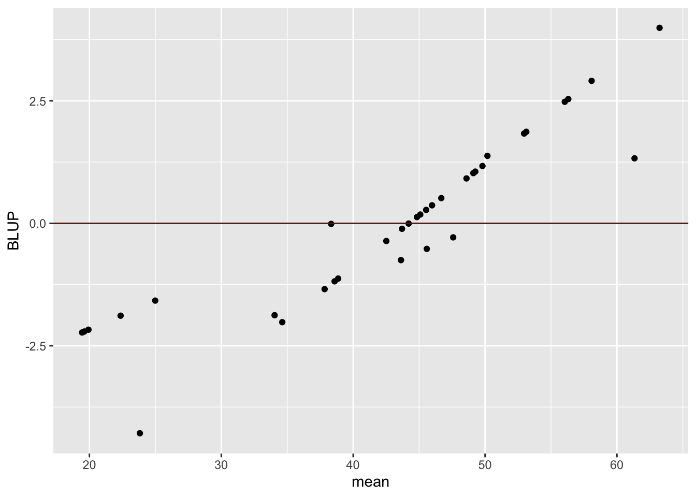
# al_alt %>%
# select(entry,biomass.1) %>%
# left_join(blups) %>%
# ggplot(.,aes(x=BLUP,y=biomass.1)) + geom_point() +
# labs(y="Raw Biomass Observations",x="BLUPs")BLUPs are shrinkage estimates
If your data are completely balanced, the BLUP should be equal to the BLUE (but centered on zero).
If there is missing data, or heterogeneity in the number of observations, BLUPs will shrink values towards the mean. Factor levels with fewer observations will be more shrunken then those with many. Intuitively, this is reflecting our confidence about the prediction when there is more data.
Where, .
Can also be written as:
Notice that shrinks towards zero when is large and becomes small. When is then .
To demonstrate, I make some plots below to compare raw data, entry means and BLUPs.
blups_vs_means %>%
mutate(BLUP=BLUP+mean(al_alt$biomass.1)) %>%
select(-emmean) %>%
pivot_longer(c(mean,BLUP),
names_to="Estimate",
values_to="Values") %>%
mutate(Estimate=factor(Estimate,levels=c("mean","BLUP"))) %>%
ggplot(.,aes(x=Estimate,y=Values,color=entry,group = entry)) +
geom_point() + geom_line() +
geom_hline(yintercept = mean(al_alt$biomass.1))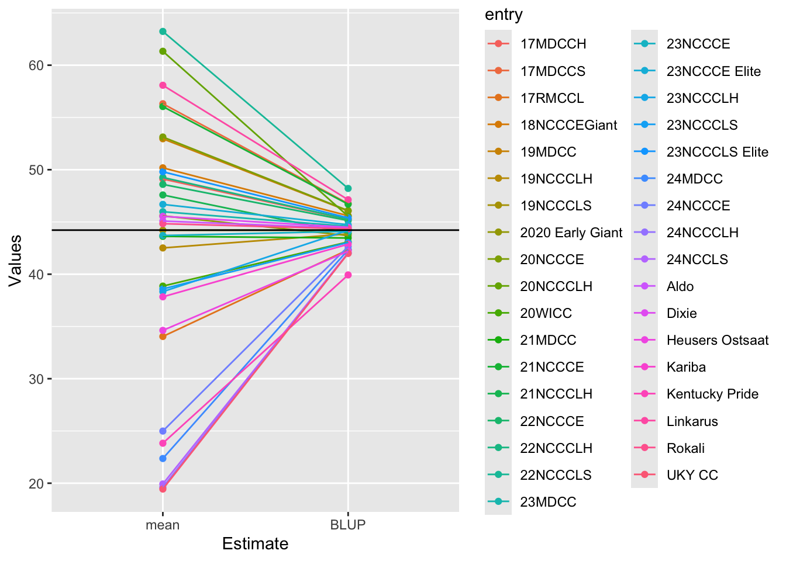
Notice that there are crossovers. Rankings by raw means or BLUEs won’t be identical to the BLUPs.
Why? Heterogeneous observations. Lines with fewer obs should be more shrunken.
blups_vs_means %>%
mutate(BLUP=BLUP+mean(al_alt$biomass.1)) %>%
select(-emmean) %>%
pivot_longer(c(mean,BLUP),
names_to="Estimate",
values_to="Values") %>%
mutate(Estimate=factor(Estimate,levels=c("RawData","mean","BLUP"))) %>%
bind_rows(al_alt %>% select(entry,biomass.1) %>% rename(Values=biomass.1) %>% mutate(Estimate="RawData")) %>%
ggplot(.,aes(x=Values,fill=Estimate)) +
geom_density(alpha=0.7)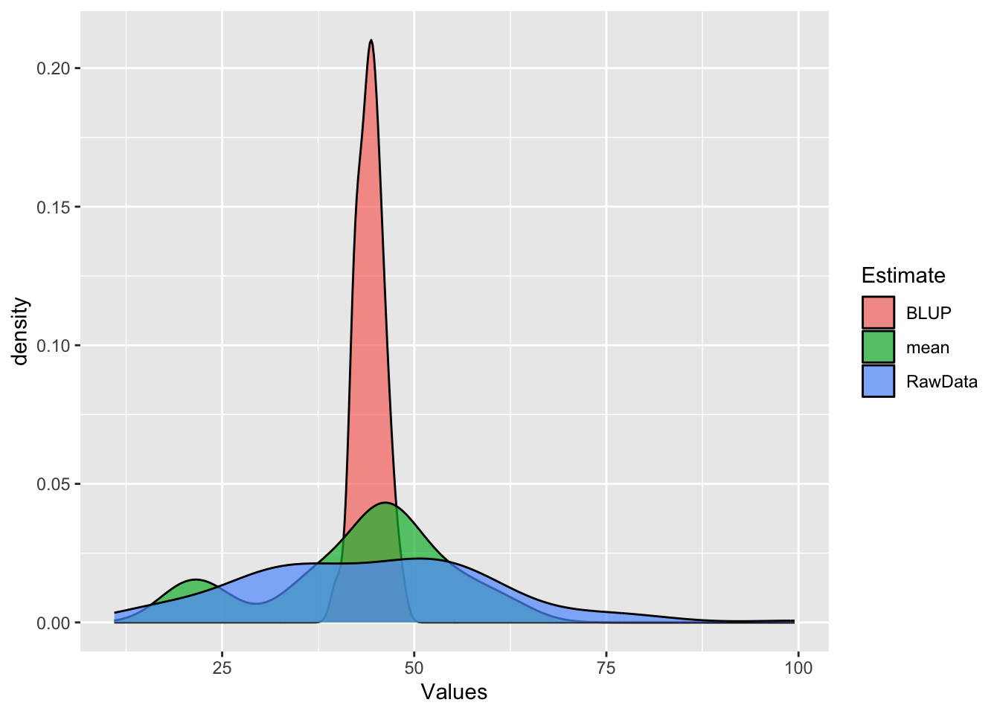
Key points
Several connections to our downstream purposes:
- Mixed-model analysis will enable us the flexiblity to accommodate real data structure
- Mixed-model variance component estimates are used in genetic analysis to compute the genetic and environmental components. The ratio of genetic to total variance (or heritability, is a critical one in quantitative genetics).
- BLUEs or BLUPs are often sometimes as the response variable (the genetic component) of the phenotype in downstream GWAS/GP.
- For plant breeding, BLUP accounts for the risk of promoting a seemingly exceptional line based on too little data.
Hands-on
- Balanced data:
- Find a truly balanced example (no missing, all genotypes observed for all reps)
- Fit a fixed-effects model –> get
emmeansfor entry- Use ANOVA to test the sources of variation
- Fit a mixed-model –> get the BLUPs for entry
- Use a LRT to test the variance components
- Compare the
emmeans(basically the BLUEs) to the BLUPs
- Unbalanced data:
- Two options:
- 1) induce missing data in your balanced data chunk
- 2) choose another dataset that leads to heterogeneous observations across entries and/or other factors
- Postulate a model that is appropriate
- Fit the fixed-effects model, get
emmeansand do ANOVA - Fit the mixed-model, extract the BLUPs and do LRTs on var. comps
- Compare the raw data distribution to the BLUP distribution
- Compare the
emmeansto the BLUPs - Observe differential shrinkage across the entries by plotting the raw means or BLUEs against the BLUP values.
- Two options:
Next
That’s it for today.
In the next session we will get into more complex variance-covariance structures using primarily asreml().
Other topics will include: 1. Model comparison with AIC/BIC 2. Data wrangling and exploratory data anlaysis 3. Loops, Functions –> e.g. for analyzing multiple traits
We’ll return with Hands-on Lesson 4 - More on Mixed Models.